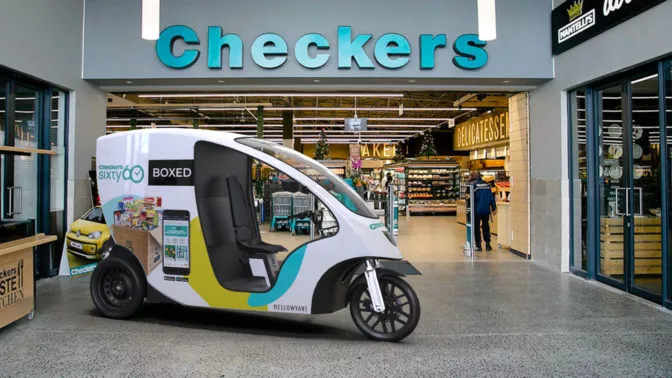

Article 3: MellowVans
MellowVans provide delivery services in an efficient, low cost, and emission-free way.
Ratings: ★★★★☆
Comments: 20
Key Features MellowVans are electric delivery vehicles that provide low cost, efficient, and emission-free utility services in cities. They are unique in a niche market segment, replacing both traditional motorcycle-based deliveries often used in the food delivery category and light van-based deliveries, used for e-commerce and parcels. They are attractive and eye-catching, with class-leading range, acceleration, and safety features. Each vehicle runs at less than a dollar per day in operational costs, provides over 100 km of range, and features 2.4 cubic meters of space, which is more than enough for most urban deliveries. They have been developed with feedback from some of the world’s leading e-commerce and delivery companies. MellowVans are safe and feature full IoT functionality, combined with bespoke client-specific offerings like active cooling and security features. Social Impact Rapid economic growth in Africa has resulted in a substantial increase of new vehicle sales in recent years, predominantly motorized two- and three-wheelers. The region has the highest growth of two- and three-wheelers in the world. This rapid expansion of vehicles has put extra stress on air quality and public health. And while motorcycles are considered among the most fuel-efficient personal modes of transportation, the cumulative effects of the large fleet have a significant impact on overall energy use and road safety. Future Plans Short-term strategy Our short-term goal is to expand our product offering into Sub-Saharan Africa and to solidify our position as the preferred supplier of light-electric vehicles with our main clients. This includes fine-tuning our vehicle serviceability. For this project, we will roll-out with DHL, which will make the vehicle available to a broader user base. Longer-term strategy Our slightly longer-term goal involves expanding our vehicle footprint into Europe, with large clients including parcel delivery companies, retailers, and main food delivery players such, urban consolidation centers and e-Commerce companies.